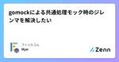
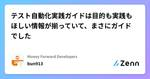
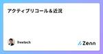
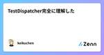
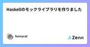
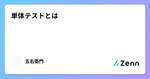
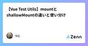
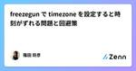
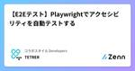
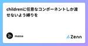

Zennの「Test」のフィード
フィード

gomockによる共通処理モック時のジレンマを解決したい 1
1
Zennの「Test」のフィード
開発一般の話として複数の関数に記述された共通処理を別の関数に切り出すことはよくあると思います。 Go言語で同様の対応を行ってテストを書いてみたのですが、モックまわりでいろいろと課題があるように感じました。 この記事ではGo言語における共通処理の切り出しとモック化の課題について解決策を探っていきます。 なおモックの作成にはgomockを使用します。 共通処理をモック化するときの課題 usecase層にパブリックな関数Aと関数Bがあり、共通の処理を関数Cとして切り出すことを想定します。 関数Cはusecase層内でのみ使用できるようにしたいので、プライベートな関数として定義します。 pa...
4日前
AWS Lambda の Container Runtime を GitHub Actions で E2E テストしたい時の備忘録
Zennの「Test」のフィード
AWS Lambda の Container Runtime を GitHub Actions で E2E テストしたい時の備忘録 はじめに 機械学習のAPI提供として AWS Lambda の Container Runtime を使うことがよくあります。 pytest などを用いて開発環境で unit test はよく行いますが、さらにDocker Container としての成果物の E2E テストをすることでより安全性を高めることができます。 今回はこの E2E テストを GitHub Acitons 上で行うための備忘録です。 ほとんどの内容は以下のブログ記事を参考にし...
5日前

テスト自動化実践ガイドは目的も実践もほしい情報が揃っていて、まさにガイドでした 1
Zennの「Test」のフィード
こんにちは。ダイの大冒険ガチ勢のbun913と申します。 みなさんはテスト自動化を推進していますか？ 私は職責上SDET(Software Development Engineer in Test)として、「どんなメリットを受けたいからこういうテストレベルで、こういうことをやっていきましょう」「このテストはこのレベルで保証したテストをしてくれるとありがたいです」というコミュニケーションを取る必要が求められます。 例えばどんどんシフトレフトを進めていくにしても、当然E2Eテストでしか得られない栄養（安心感）があるので、そこも含めて「じゃあどんなことを自動化するのかな」「単体テストとは被るけ...
5日前

アクティブリコール＆近況
Zennの「Test」のフィード
夏期講習真っ只中です。 暑い日が続きますが、生徒たちと一緒に頑張っています。 インプット（過去問を解いたり）するときは、常にアウトプット（生徒にわかりやすく伝える）ことを意識していますが、プログラミング学習も同じで、新しいことを学ぶ時は常に誰かに教えることを意識して練習してます。 最近、MX ERGOというマウスを購入して使っています。これまでの習慣で気づいたらトラックパッドに手を置いてしまいます。MacbookAirを使っていますが、おすすめの設定方法があれば教えて下さい><; アクティブリコール 4月から本格的にプログラミング学習をはじめて、限られた時間の中で多くの...
6日前

TestDispatcher完全に理解した
Zennの「Test」のフィード
TL;DR プロダクションコードのDispatcherはとりあえず全部DIにしとこう 直列処理をテストしたいとき：runTest(UnconfinedTestDispatcher()) 並列処理をテストしたいとき：runTest + StandardTestDispatcherの注入 説明 DispatcherはDIしよう class DispatcherModule { fun provideIODispatcher: CoroutineDispatcher = Dispatchers.IO } class HogeRepository( priva...
7日前

Haskellのモックライブラリを作りました
Zennの「Test」のフィード
Haskellのモックライブラリを作りました！ https://github.com/pujoheadsoft/mockcat Hackageはこちら。 Stackageは今のところNightlyにのみ入ってます(これ放っておいてもいずれLTSにも入るのかな？ →コメントで「入る」と教えていただきました)。 ざっくりとできること 大きく次の2つのことができます。 スタブ関数を作る 引数が期待通り適用されたかを検証する 検証は色々と行えますが、大概のケースではスタブ関数を利用するだけで事足りると思っています。 詳しくはドキュメントをご参照ください。 特徴 既存のモックライブラリ...
7日前
monorepo × vitestでプロジェクト全体のカバレッジを計測する
Zennの「Test」のフィード
こんにちは、エンジニアの籏野です。 アプリケーション開発において、テストを書くということは非常に重要です。 テストを書く際の一つの指標としてカバレッジを計測することがあると思います。 弊社でもカバレッジの計測を行っているのですが、モノレポ構成のプロジェクトでプロジェクト全体のカバレッジを計測したいという要望がありました。 プロジェクト内に存在する複数のパッケージ/アプリケーションそれぞれでのテスト実行・カバレッジ計測はできていたのですが、プロジェクト全体のカバレッジ計測は行ったことがなかったので今回調べました。 テストランナーにはvitestを使用しており、vitestのWorkspac...
7日前

単体テストとは
Zennの「Test」のフィード
単体テストとは 単体テストとは、ユニットテスト(UT)、コンポーネントテストとも呼ばれ、ソフトウェア開発の最初されるテストです。 テスト工程として、 システムテスト 結合テスト 単体テスト が定義されており、単体テストについて「詳細設計」に対して行われるテストとなっています。 一般的に、コンポーネントやモジュール単位でテスト実施します。 ドライバー ドライバーとは、テスト対象を呼び出す役割を持つ、上位モジュールの大替品です。 スタブ スタブとは、テスト対象が動作した際に呼び出す先の下位モジュールの大替品です。 単体テストのメリット・デメリット メリット コンポー...
8日前

【Vue Test Utils】mountとshallowMountの違いと使い分け
Zennの「Test」のフィード
mountとshallowMountの違い mount 指定したVueコンポーネントの子コンポーネントまでを全てレンダリングするAPI。 import { mount } from '@vue/test-utils'; import ParentComponent from '@/components/ParentComponent.vue'; const wrapper = mount(ParentComponent); console.log(wrapper.html()); 出力例 <div> <h1>Parent Component</...
10日前

freezegun で timezone を設定すると時刻がずれる問題と回避策
Zennの「Test」のフィード
次で報告済の内容の解説です: [Bug] tz_offset shifts datetime which is instantiated with tz argument · Issue #553 · spulec/freezegun 正しい Python の仕様 本来は datetime.now() で生成した時刻は、引数: tz が違っても同じ時刻になります: from datetime import datetime, timedelta, timezone from freezegun import freeze_time from dateutil.tz import tz...
11日前

【E2Eテスト】Playwrightでアクセシビリティを自動テストする 1
Zennの「Test」のフィード
はじめに 今回はE2Eテストツール「Playwright」を使って、Webアクセシビリティの自動テストを試してみました。 https://playwright.dev/docs/accessibility-testing アクセシビリティについて Webアクセシビリティについて、政府広報オンラインの記事で以下のように解説されています。 ウェブアクセシビリティとは？ 分かりやすくゼロから解説！ 利用者の障害などの有無やその度合い、年齢や利用環境にかかわらず、あらゆる人々がウェブサイトで提供されている情報やサービスを利用できること、またその到達度を意味します。 ウェブサイトがウ...
12日前

childrenに任意なコンポーネントしか渡せないよう縛りを 1
Zennの「Test」のフィード
今回やること 例えばTabListというコンポーネントのchildrenにはTabしか渡せないようにしたい⚠️ <TabList> <Tab val="1" /> <Tab val="2" /> <Tab val="3" /> </TabList> 下記のようにすると、TabList children must be Tabというエラーをスルーさせよう。 <TabList> <Tab val="1" /> <div /> </TabList> child...
12日前

mswでGraphQLをmockし忘れたときにクエリを特定する
Zennの「Test」のフィード
mswでGraphQLをmockし忘れるとwarningが出る... StorybookやテストなどでGrapQLの通信をMockしたいことがありますが、mockし忘れた場合テストを実行するとコンソールに以下のようなwarningが表示されます。 RestAPIであればURLからどのリクエストをモックし損ねたか理解できますが、GraphQLはURLが同じになるためどのクエリをMockし損ねたかわかりません。 console.warn [MSW] Warning: intercepted a request without a matching request handler:...
17日前
フロントエンドテストの概要
Zennの「Test」のフィード
この記事のゴール フロントエンドの目的、テスト手法、戦略モデルを理解すること。 テストの目的 事業の信頼のため 事業に経済的な影響を及ぼすバグを含めてしまった場合、 信頼を取り戻すために時間と経済的な工数がかかる。 バグを含めてリリースをすると、サービスが利用できないだけではなく、 サービスに対するイメージが低下する。 健全なコードを維持するため テストコードにより、リファクタリングをした際に既存のコードに不備がないか確認可能。 テスト手法 下記にフロントエンドテスト手法を示す。 静的解析 バグの早期発見に繋がる。変数や関数の戻り値が期待通りであるかの検証に役に立つ。 ...
17日前
storybook8をプロダクトに導入して起きた問題と解決策をまとめてみた
Zennの「Test」のフィード
こんにちは、株式会社 Rehab for JAPAN エンジニアのもじゃ(@moja_moja)です。 私の携わっているプロダクトで storybook 8 を導入しました。 私自身、これまで storybook を実務で使用したことがなかったため、導入して色々な問題やエラーに遭遇しました。 今回は、導入時に起きた問題と解決策について紹介していきたいと思います。 これから storybook 8 の導入・検討をする方々の参考になると幸いです。 導入する恩恵について 問題と解決策を紹介する前に、プロダクトに storybook を導入するメリットや恩恵について紹介しようと思います。 様...
18日前
URLにおけるクエリパラメータが空の場合の仕様について
Zennの「Test」のフィード
クエリパラメータ周りのテストを書いている時、「パラメータのキーは入力されていて値が入力されていない場合の挙動はどうなるんだろう」とふと気になったので、検証してみました。 つまり、 test.com/?parameter= のようにクエリのキーは入力されているけど値が入力されていないときです。 結論 キーが存在しないわけではなく、値が設定されていないだけなので、クエリパラメータは存在すると見なされます。 また、値は空文字列 ("")として扱われます。 JSの場合、以下のようにして確認出来ます。 const urlParams = new URLSearchParams('paramet...
19日前
【Go】uber-go/mockを使って、モックを活用してテストを行なってみる
Zennの「Test」のフィード
goでテスト時のmockをどのように行うか分からなかったので、実際に試してみました。 golang/mockを使おうとしたところ、 readmeに以下の文が。 https://github.com/golang/mock Update, June 2023: This repo and tool are no longer maintained. Please see go.uber.org/mock for a maintained fork instead. こちらのリポジトリはもうメンテナンスがされていないようなので、uber-go/mockを使うことにしました。 Uberでg...
19日前
Cloudflare Workersのテストの書き方
Zennの「Test」のフィード
はじめに 本稿は、筆者が実際に業務で採用しているCloudflare Workersのテストの書き方を紹介するものです。第一に想定する読者は、「Cloudflare Workersの利用を検討しているが、テストについてはまだ調査が進んでいない状態の方」となります。同時に、筆者としてもまだ手探り状態ではあるので、すでにテストを書いて運用している方からの感想・フィードバックも歓迎しています。 また、終盤にHono RPCについて触れるので、もし不案内な方がいらっしゃれば作者の方による紹介記事を先にご覧いただくとよいと思います。[1] ユニットテスト ここで厳密な定義問題に関わるのは本...
20日前
Terraform Testに触れてみる
Zennの「Test」のフィード
Terraform Testとは Terraform v1.6から実装されたTerraform組み込みのテスト機能。 従来、TerraformのコードをテストするにはTerratestなどのツールを使うのがスタンダードだった。 Terratest[1]はGoライブラリであり、Terraformに限らずk8sマニフェストやDockerFileもテストする事ができた。 しかしGoライブラリなので、Goのテストコードが書ける必要があった。 本テスト機能は、もちろんk8sマニフェストやDockerFileのテストはできないが、Terraformで使われるHCLでテストコードを書くことができる...
20日前
テストコードを書いてみよう
Zennの「Test」のフィード
最近、Flutter & Dartで、テストコードを書かなければならない場面が出てきました。困りました😅 簡単なテストコードでもいいから書き方を覚えたい。ということで、記事も書いたことあるけど、本も出すことにしました。ゆるっとお勉強しましょう。 やる内容 ◆Unit Test ◆WidgetTest ◆ IntegrationTest 著者: JboyHashimoto
21日前